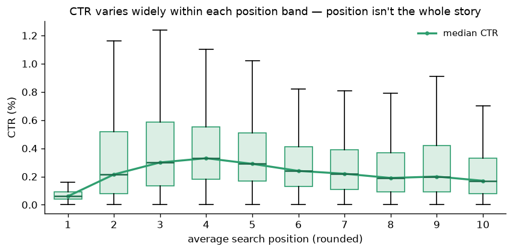
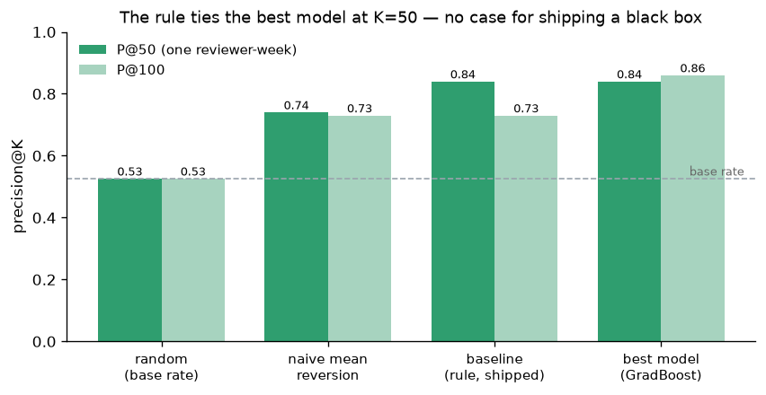
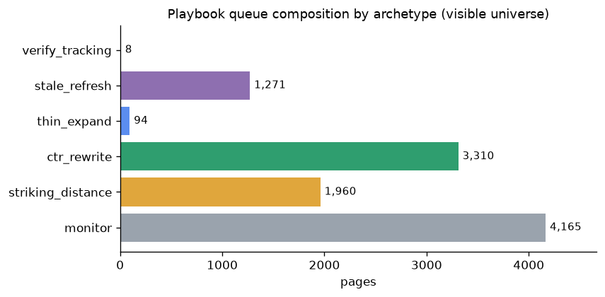
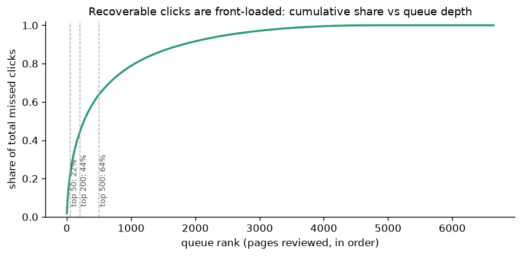

Abstract
FlyRank publishes content straight into clients’ websites and then watches it in search, where pages rank and then quietly decay — rankings slip, clicks drop, and teams notice too late. FlyRank already triages this with hand-written flags (a health score, quick-win tags); the real question underneath them is “which page should a human fix first?” — and whether a learned model beats a transparent rule at that call. Working from a 30,000-page anonymized slice of production search-console data (28 pseudonymized clients), I score each visible page by how far its click-through rate falls below same-rank peers — a position-adjusted CTR-deficit rule — and rank the review queue by it. To test whether a model does better, I built an observed forward label (did CTR improve the next month?) and raced four classifiers against the rule on a client-grouped, time-aware split. At the operating point that matters — precision@50, one reviewer’s week — the rule ties the best model (≈0.84 vs a 0.53 base rate); it only loses ground deeper in the queue, and most of the shared signal is mean reversion. The deliverable is a transparent rule turned into a human-reviewed action playbook with stated limits — decision-support for one content portfolio, not a claim about what Google rewards.
01 — Introduction
FlyRank’s content-decay problem, framed as an ordering decision
The case study. FlyRank builds content as infrastructure — it researches, writes, and publishes pages straight into a client’s website, then watches search data and optimizes. The recurring failure mode is decay: a page ranks, earns clicks, and then slips as freshness fades or search intent drifts — usually unnoticed until the traffic is already gone. FlyRank triages this today with hand-written flags (a health score, quick-win tags, needs-attention markers) — thresholds chosen by hand that work and run in production, but that run out where signals get many, tangled, and shifting. This study lives in exactly that gap: on real, anonymized search data, can a trained model beat the rule at the single decision underneath every flag — which page should a human open first?
Picture a content editor on Monday morning. There are thousands of already-visible pages and about fifty review-hours in the week. At random order, clearing the backlog would take years, so only the very top of any list ever gets acted on. That single fact decides everything downstream: the product is not a verdict on each page, it is the ordering, and the honest metric is precision@K at real review capacity (K ≈ 50), not accuracy over a large, boring majority.
There is genuine signal to rank on. Among pages with real exposure, click-through rate varies about six-fold within a single position band — on page one, 0.12% CTR at the 25th percentile against 0.75% at the 90th. If rank alone decided clicks, that spread would be tight. It isn’t, and the leftover — how far a page under-captures clicks versus peers at the same position — is exactly what a human could act on.
The cost of a wrong call is asymmetric, which is why the ordering has to be trustworthy at the top. A false positive costs an editor an hour and, worse, a little trust in the queue — burn people twice and they stop using it. A false negative is invisible: a genuinely under-earning page never surfaces. And the dangerous case is recommending a rewrite for a page whose low CTR is correct — one ranking for a query it shouldn’t match. So the whole design optimizes the top of the list and hands every final judgment to a person.
02 — Data
A public, anonymized slice — described exactly, claimed narrowly
All results here come from the one dataset that ships publicly with the internship repo: content_refresh_anonymized.csv — a 30,000-row anonymized slice of content-performance data, one row per pseudonymized content item, carrying observed search/engagement metrics, content metadata, freshness fields, and two nested 30-day comparison windows. It contains no client names, domains, URLs, page titles, keywords, or raw queries — only hashed IDs and numeric/categorical metrics. Rate columns are percentages on a 0–100 scale (a ctr value of 0.24 means 0.24%, verified against raw click/impression counts, not taken on faith).
Date windows. Metrics are a 90-day snapshot. The file’s only forward seam is its split of impressions/clicks/sessions into prev_30d (days 31–60) and last_30d (days 1–30); that seam becomes the modeling label in §3.
What I excluded, and why. I keep only visible pages an editor could actually open: at least 500 impressions in 90 days (enough exposure to rank on), an average position between 1 and 20 (a page with none can’t be compared to a tier — avg_position == 0 means no data, not rank zero), and at least 90 days old (too-new pages can’t be judged). That leaves 12,023 visible pages across 28 clients — 40% of the slice. Pseudonymous IDs are used only for grouping and splitting, never as model features.
| Filter step | Pages remaining |
|---|---|
| Starter slice (deduplicated by content id) | 30,000 |
| + impressions ≥ 500 / 90d | ~21,000 |
| + average position in (0, 20] | ~13,000 |
| + content age ≥ 90 days → visible universe | 12,023 |
Honesty note on scale: this paper analyzes the public 30k slice, not the full production warehouse. Where the analysis hits a wall it can’t clear here — holding search position constant between windows — the full daily-facts release is named as the right home for the unconfounded version, never hand-waved as already done.
03 — Methodology
A one-line rule, an observed forward label, and a split that can’t cheat
The score (the shipped rule)
For each rounded position band, expected_ctr is the band’s median CTR — the CTR-vs-rank curve. A page’s shortfall is
missed_clicks_90d = max(0, expected_ctr − ctr) / 100 × impressions_90d: the clicks it leaves on the table versus same-rank peers. Rank the queue by that. The whole rule is one transparent, auditable line — no black box to trust.

The label (to test the rule honestly)
A single 90-day snapshot cannot yield a label the rule isn’t already peeking at — so I use the forward seam. The decision moment is the end of prev_30d; features are strictly pre-decision; and the outcome is observed, binary, and measured strictly later:
y = ctr_last_30d > ctr_prev_30d — “did CTR improve next month?” The base rate is ≈0.526, so any scorer worth shipping must clear that.
Validation design — two guards at once
- Time-aware — no feature reads the outcome window. Every 90-day column and every
last_30dcolumn is refused as a feature; that refusal is the guard. - Grouped by client —
GroupKFold(5)keeps every client wholly on one side of each fold, so a model can’t memorize a client from shared templates or tracking setups and “predict” its held-out pages. Model scores are out-of-fold.
ctr_last) spikes held-out AUC from an honest 0.65 to ≈0.999. That jump is what leakage looks like — and precisely why those columns stay banned. The full ML-09 checklist (timeline order, no label-derived features, no product flags, grouped split, base-rate reported, sane top feature, out-of-fold scoring) passed.
04 — Results vs baseline
At one-week capacity, the rule ties the model
Same universe, same split, same metric for every scorer. Two floor baselines sit below the models on purpose: naive_mean_reversion (rank by lowest current CTR) measures how much of any score is just regression-to-the-mean, and baseline_ML07 is the shipped rule re-expressed at the decision moment.
| Scorer | AUC (grouped) | P@20 | P@50 | P@100 |
|---|---|---|---|---|
| base rate (random) | — | 0.53 | 0.53 | 0.53 |
| naive mean reversion (floor) | — | 0.75 | 0.74 | 0.73 |
| baseline — position-adjusted rule (shipped) | — | 0.80 | 0.84 | 0.73 |
| Logistic Regression | 0.64 | 0.65 | 0.66 | 0.70 |
| Decision Tree (depth 3) | 0.64 | 0.65 | 0.70 | 0.73 |
| Random Forest | 0.65 | 0.95 | 0.78 | 0.78 |
| Gradient Boosting (best model) | 0.65 | 0.70 | 0.84 | 0.86 |

The honest, capacity-dependent reading:
- At the headline K=50, the baseline is not beaten. For a one-reviewer-week queue, a one-line rule matches an opaque ensemble — so there is no case for switching. A simple thing winning is a legitimate, even preferred, result.
- The model only earns its keep deeper. If review capacity were larger than one week, gradient boosting’s steadier P@100 would pull ahead. Reporting the win and the loss at different K is the finding, not a footnote.
- Most of the shared signal is mean reversion. The naive floor alone reaches 0.74 of the rule’s 0.84; the position-adjustment adds the real ~+0.10; and the model’s dominant feature is
ctr_prev— the same quantity the rule ranks on. Content features add little. No free lunch on this data.
05 — Limitations & honest framing
Every caveat carries a number
- Not causal. “Worth reviewing first” is decision-support. There is no intervention in this data, so I never claim a rewrite causes a CTR lift.
- Position confound — the big one. CTR can rise next month because a page ranked better, not because anyone improved it. The slice has no per-window position to hold constant, so a slice of every score’s success is rank drift. The unconfounded verdict needs the warehouse’s daily rank and a true forward month.
- Small panel. 28 clients. Honesty costs little here — held-out AUC moves only from ~0.67 (random split) to ~0.63 (client-grouped), so the model isn’t heavily memorizing clients — but this is not a large or random sample of the web.
- Sparse value. Cost-per-click is known for only ~22% of the queue and is a benchmark, not booked revenue, so the dollar column is secondary to the click-based rank.
- Thin position bands. Bands 1–2 rest on few pages;
expected_ctrthere is shaky and used only as a loose hint. - Not an SEO-algorithm claim. This models one portfolio’s outcomes in one period. It says nothing about what Google rewards.
06 — Ranked recommendations
The validated queue, turned into a human-reviewed playbook
The validated part is the queue order. The shipped product wraps it: every actionable page gets one archetype by a documented first-match cascade, where the archetype’s action is directional guidance — deliberately kept separate from the validated ranking, because it is not a per-page prediction.
| Archetype | When it fires | Recommended action | Automate? |
|---|---|---|---|
verify_tracking | CTR < 0.03pp on ≥50k impressions (implausible) | Verify click tracking before any content work | No — human only |
stale_refresh | under-capturing, age ≥180d, ≥90d since update | Refresh facts/dates, expand thin sections | Draft only |
thin_expand | under-capturing, word count < 1500 | Expand depth where demand already exists | Draft only |
ctr_rewrite | under-capturing, fresh + deep | Rewrite title & meta to lift CTR | Draft only |
striking_distance | not under-capturing, position 11–20 | Improve relevance + internal links toward page 1 | Draft only |
monitor | at/above expected, page-1, fresh | Watch; no action this cycle | — |

ctr_rewrite and stale_refresh dominate the actionable work; only 8 pages trip the tracking-suspect flag — but several of those sit near the very top of the queue, which is exactly why nothing auto-publishes.
The no-go list — what must never be automated: auto-publishing any edit; acting on verify_tracking pages as content (fix tracking first); treating an archetype action as a prediction; ranking by dollar value alone (CPC is sparse); trusting thin-band order; and framing any of this as “what Google rewards.” Every row requires human review before action; zero rows auto-publish, by rule.
07 — Reproducibility
Clone, install, Run All — same numbers
Everything on this page is regenerated by one notebook from the public slice, no token needed. Random seed is fixed at 0; tree-ensemble numbers can shift a point or two across scikit-learn versions (this run used 1.9.0).
| Artifact | Where |
|---|---|
| Repository | github.com/ROHITCRAFTSYT/flyrank-int |
| Capstone notebook (mirrors this paper, regenerates every figure) | work/notebooks/capstone.ipynb |
| Per-stage notebooks (framing → baseline → model → validation → playbook) | work/notebooks/ |
| Committed metrics receipts (safe aggregates, no IDs) | work/outputs/*.json |
Steps: git clone → pip install -r requirements.txt → open the capstone notebook → Run all. The notebook clones the public starter data automatically in Colab; locally it reads data/raw/content_refresh_anonymized.csv.
08 — Acknowledgments & data credit
Built on real data, credited properly
Built on the FlyRank ML Internship dataset — an anonymized slice of real production search-console and engagement data — provided through the FlyRank ML internship program. Data source: flyrank.ai. Crediting the data source is standard research practice, and it signals the data is real rather than synthetic.
Thanks to the internship’s mentors and the intern-guide skills that shaped the discipline behind this work: framing a decision before a model, writing a data contract, hunting leakage, comparing honestly against a baseline, and refusing to overclaim. The recurring lesson across seven weeks — that a well-understood “the simple rule wins” is a real result — is the finding I’m proudest of here.